12.3. Python packages¶
This chapter contains further python packages demos to show how itom is used as a general python IDE. Click on any image to see the full script documentation.
12.3.1. Matplotlib¶
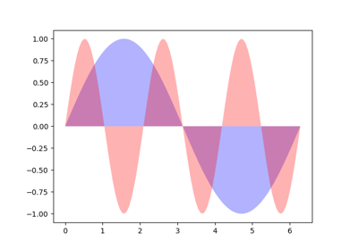
Fill features
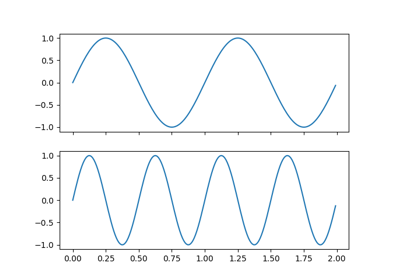
Multi cursor


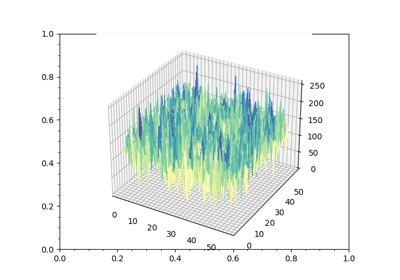
Surface 3D


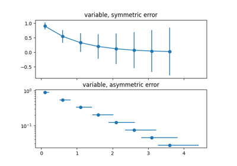
Errorbar
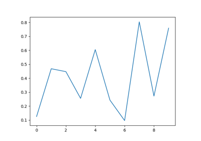
Events


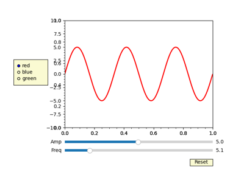
Slider


12.3.2. Numpy¶
This demos shows the features of numpy (https://numpy.org/doc/stable/user/quickstart.html).

Splitting array


12.3.3. others¶
Pyro4
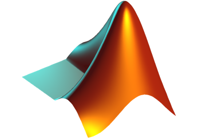
Matlab engine
12.3.4. Pandas¶
This demos show the basics feature of pandas (copied from https://pandas.pydata.org/docs/user_guide/10min.html).
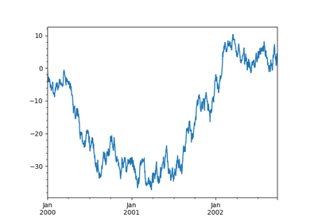
Plotting


Operations


12.3.5. Parallelization and Threading¶
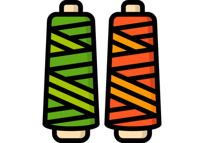
Worker thread
Thread pool executor
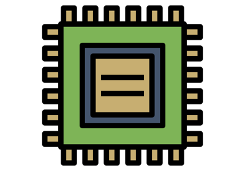
Multi processing
12.3.6. Plotly¶


12.3.7. PyTest¶

12.3.8. Scikit-learn¶


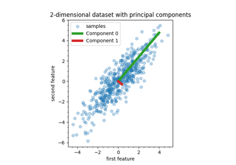
Principal Component Regression vs Partial Least Squares Regression
Principal Component Regression vs Partial Least Squares Regression
12.3.9. Scipy¶


12.3.10. Seaborn¶
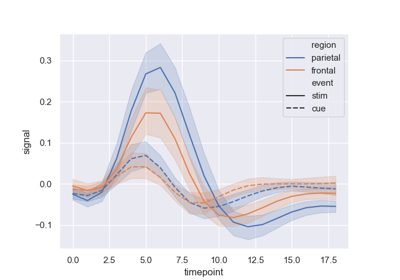
Timerseries


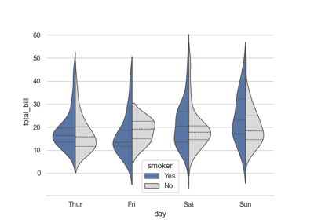
Violinplots
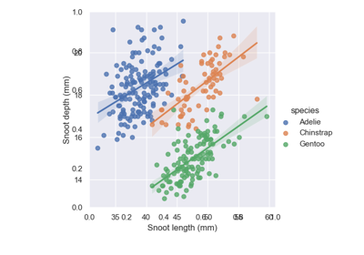
Linear regression
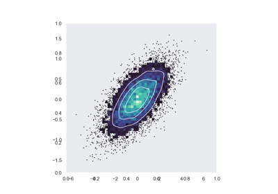
Bivariate